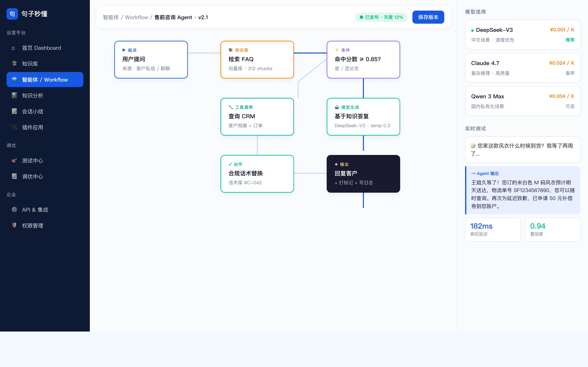
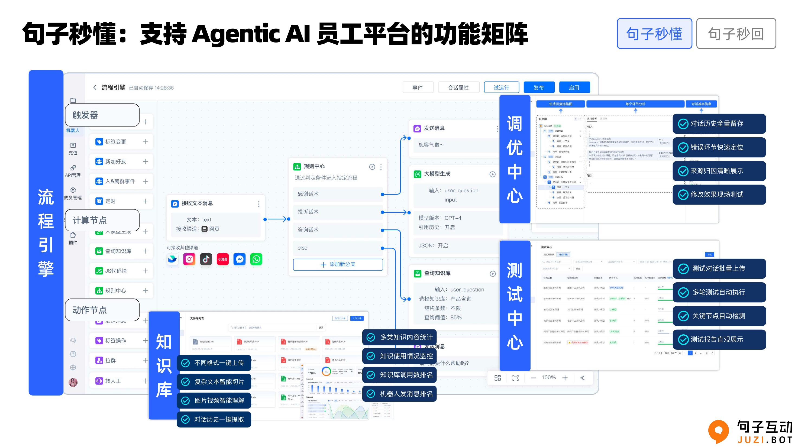

可视化拼装 Agent，不用写代码。
Canvas 可视化编辑器——拖拽节点连成 Agent 工作流。条件、循环、并行、转人工，每一步看得见、改得动。


一个企业级 Agent 开发平台，该有的都有。
句子秒懂是 AI 员工的「大脑」。可视化搭 Agent、接知识、调工具、选模型、发渠道——业务人员不写代码，就能把企业的流程和知识装进 Agent。
可视化编排
Canvas 拖拽节点连成 Agent——条件、循环、并行、转人工，每一步看得见、改得动，运营不写代码也能配。
多 Agent 协作
复杂业务拆成各管一段的 Agent，主管 Agent 统一调度，比单个几百节点的大流程更好维护、效果更好。
知识库
产品文档、FAQ、网页、表格、API 一次导入，自动建索引，回答带出处、不跑偏。
插件与工具
接 CRM、工单、订单、自定义 API，Agent 不止于回复，还能查库存、发券、改订单。
100+ 大模型
DeepSeek、智谱、通义、文心、GPT 任选，按场景和成本随时切换，不绑死任何一家。
一键发布多渠道
配好的 Agent 直接发布到 11 个 IM 通道、网页和 API，复用到销售、客服、招聘等多个场景。
大模型不是在猜——它是真读过你的业务文档。
通用大模型的回答来自公开语料。它不知道你的产品参数，不懂你的合规边界，不知道你的促销规则。
句子秒懂的知识库让 AI 基于企业自己的文档回答客户
句子秒懂的知识库让 AI 基于企业自己的文档回答客户：FAQ、产品手册、网页内容、内部规则、合规话术，一次导入，长期可检索。
- 支持文档、网页、表格、API 等多种格式导入
- AI 自动分块 + 向量化，毫秒级检索匹配
- 知识覆盖度分析：哪些问题客户问了但 AI 没答好
- 版本管理：文档更新后 AI 同步更新
- 多知识库隔离：不同业务线、不同行业各管各的
运营人员即可配置 Agent 行为，无需等待开发排期。
Canvas 可视化编辑器——拖拽节点连成 Agent 工作流。条件判断、知识库查询、模型调用、工具调用、转人工——每一步都看得见、改得动。
运营人员即可配置 Agent 行为，无需等待开发排期
运营人员即可配置 Agent 行为，无需等待开发排期。Agent 表现不符合预期时，运营在 Canvas 上即可调整。
- 三种智能体：对话型 / 任务型 / 多 Agent 协作
- 100+ 种主流大模型可选：DeepSeek、智谱、文心、通义、GPT 等
- 版本管理 + 灰度发布：新版本可控上线
- 工作流模板库：每个行业都有起跑模板
开通就带一套现成的行业打法。
每个行业的话术、SOP、合规边界，我们都内置好了——多年沉下来的行业经验，你不用从零调，开通就能用。
AI 真懂业务的客户拿到的效果。
AI 不止于回复，还能承接后续业务。
用句子秒懂
训练你的 AI 员工。
从一个 AI 角色起步，逐步扩展到多个 Agent。90 天内，第一个 AI 员工即在客户的 IM 中上岗。